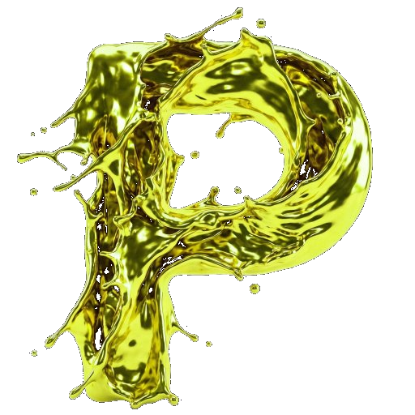
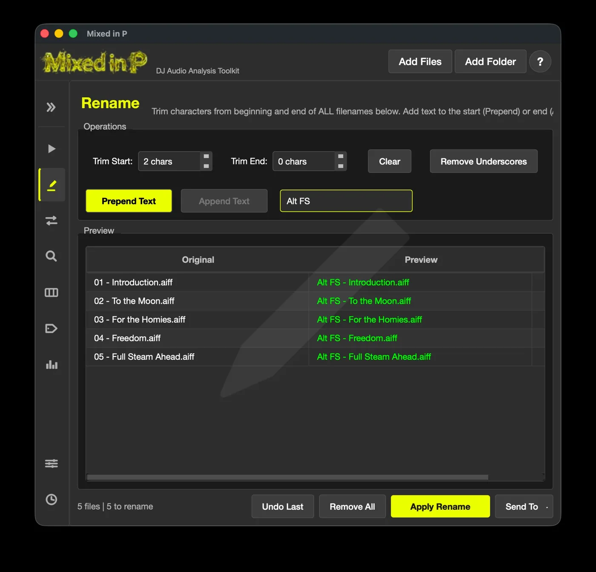
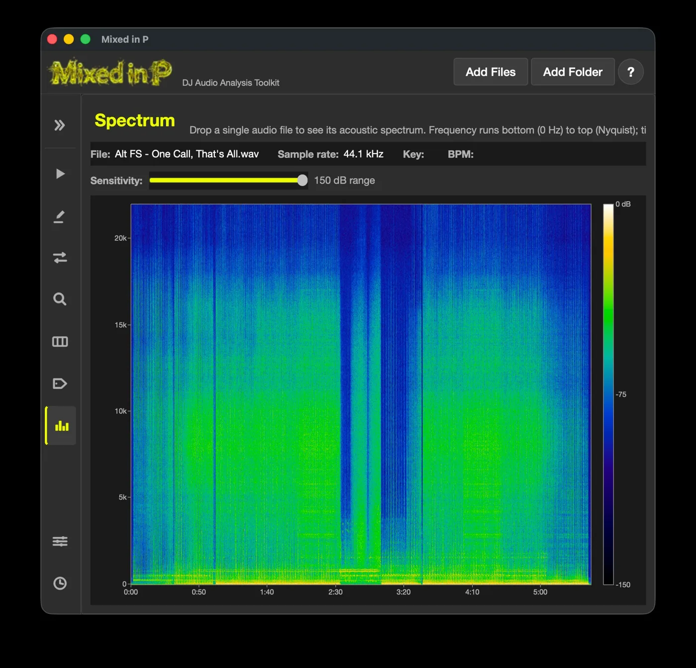
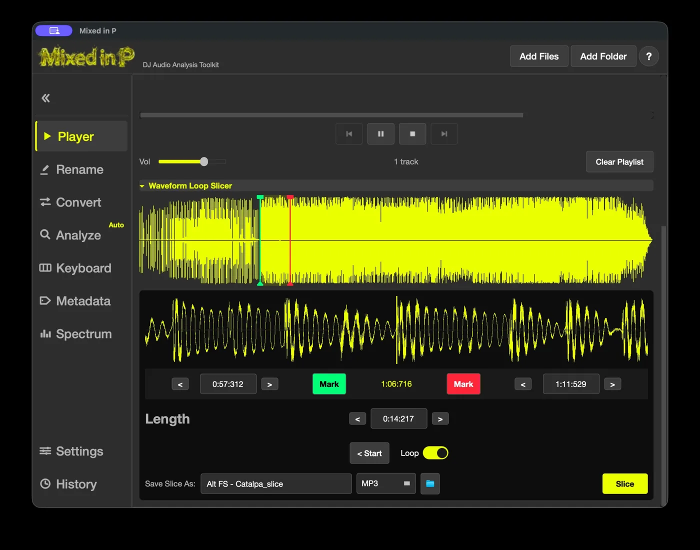
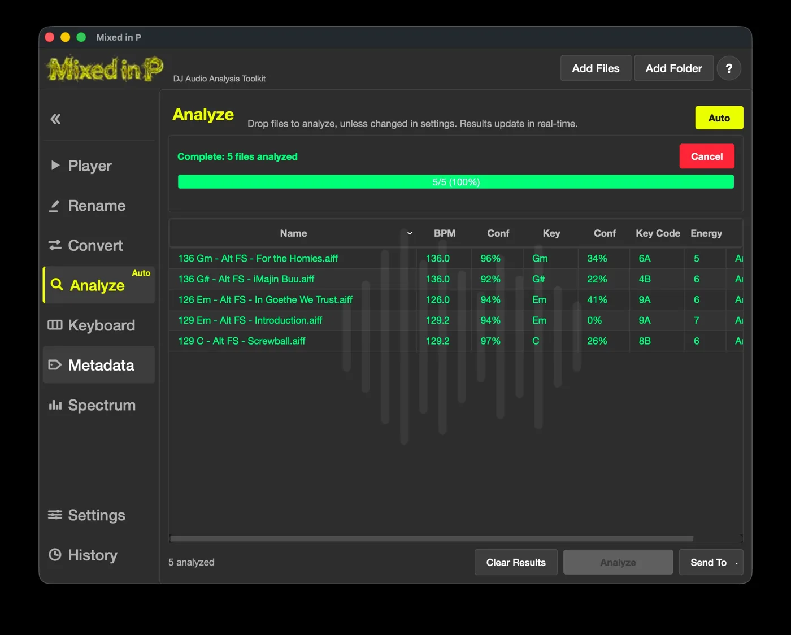

Lossless conversion
Move between WAV, FLAC, AIFF, and MP3. Lossy-to-lossless is blocked automatically to protect your sound.

DJ Audio Analysis Toolkit
Every track decoded — tagged, renamed, and mix-ready.
Streamline your entire audio file workflow.
WINDOWS / MAC / LINUX · OPEN SOURCE
Tagging, renaming, and sorting new tracks is a tedious task that is easy to skip — until messy metadata and filenames trip you up mid-set.
Mixed in P puts every prep tool in one place so your tracks are always ready.

Mixed in P started here — with the hours I lost renaming files by hand. Now a whole album folder is fixed in seconds: trim the junk, add the artist name, done. A live preview shows every change before you commit, and the History panel undoes any batch in one click.

A full spectrogram view shows exactly where a file's frequencies stop — so you can catch a low-quality MP3 dressed up as a lossless file before it ever hits your set.

Audition tracks in the built-in player, then set an A–B loop right on the waveform and export a clean slice. Nudge the markers down to the millisecond, loop it until it's right, and save in any format.

Drop in a folder and every track is analyzed in seconds, with confidence scores so you know what to trust. BPM detection is rock-solid. Key detection is notoriously hard for any program to nail — so a confidence rating flags exactly which files are worth a second look. Use whichever key system you prefer, or none at all, and the full settings panel gives you complete control.
And more
Six panels, zero plugins. Everything runs locally on your machine.
Move between WAV, FLAC, AIFF, and MP3. Lossy-to-lossless is blocked automatically to protect your sound.
Edit title, artist, key, BPM, label, and more — and embed cover art. Changes save straight to the file.
A 3-octave piano and key-code tools for working out compatible keys and chords by ear.
Queue tracks with their BPM, key, and year in view, and audition your set order without leaving the app.
Every batch operation is logged. Renamed 500 files and changed your mind? Roll it back in one click.
Turn on Auto and dropped files are analyzed the moment they land — results update in real time.
See it in action
A folder dropped in, renamed, converted, analyzed and sliced — the whole workflow in one take.
Get it
It's a desktop app for Windows, Mac or Linux computers.
Read the documentation here.
v1.3.2 · Free & open source (MIT) · All versions & release notes
Quick start
.dmg on macOS or the .exe installer on Windows. On macOS, drag-to-Applications in the DMG window. Windows runs a setup wizard.
Open. The builds are signed and notarized, so it's a quick one-time confirmation.
More info → Run anyway → Yes to proceed.
Add Folder, or drag a folder of tracks straight onto the window.128 8A - Original_Name.Mixed in P is a desktop app — open this page on your Windows, Mac, or Linux computer to install it.
Continue to GitHub anyway →